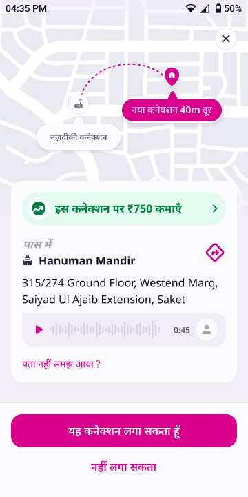
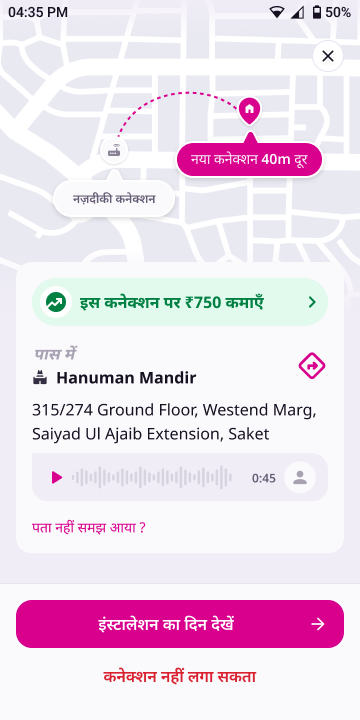
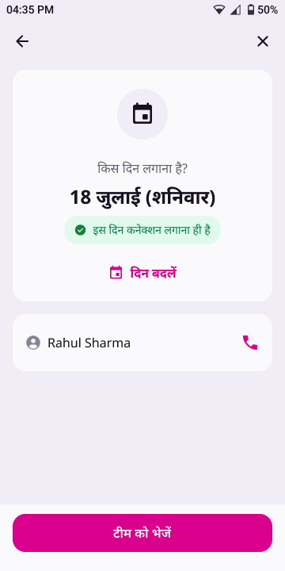
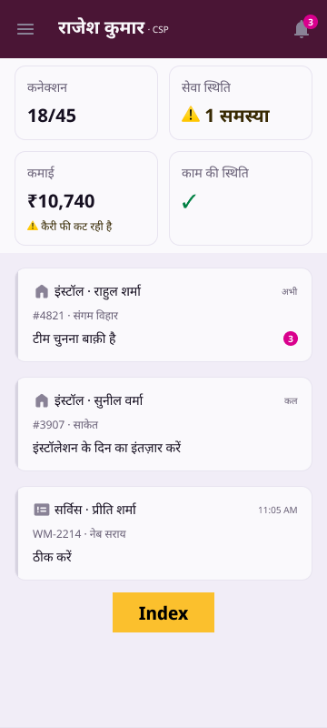

Partner App · Booking flow · Design update
Once a partner has accepted a booking, every way back into it leads to the same place: the installation-day screen. Going back from that screen shows the booking card in an Accepted version, with new CTAs. Nothing in this flow undoes the acceptance.
At a glance
If the partner leaves the installation-day screen and later taps the booking on Home, the same day screen opens.
Back from the day screen opens the booking card in its Accepted version. The booking stays accepted.
इंस्टालेशन का दिन देखें and कनेक्शन नहीं लगा सकता replace accept/decline. The ✕ closes without a sheet.


Flows


From the Accepted card, there are three ways out:
Opens the day screen again.
Starts the post-acceptance cancel flow, same as today: day-change offer → still cancel → rejection reasons → each reason's own flow.
No bottom sheet. Return to where the partner came from (Home, in the normal case).
The state does not change. Going back from the day screen is just navigation. It makes no API call, the booking stays Accepted (AWAITING_TECHNICIAN_ASSIGNMENT, acceptanceReceived = true), and the partner never sees the accept/decline CTAs for it again.
Screen
The card itself (map, ₹750 banner, landmark, address, audio, पता नहीं समझ आया ?) is identical to the version before acceptance. Only the bottom CTA bar and the ✕ behave differently.
acceptanceReceived = true, executor = null).| Element | Before accept | Accepted version |
|---|---|---|
| Primary CTA | यह कनेक्शन लगा सकता हूँ | इंस्टालेशन का दिन देखें + 20dp → trailing icon · bg/brand #D9008D, label type/label/lg 16/24 SemiBold, text/onbrand · 48dp · radius 16 |
| Tertiary CTA | नहीं लगा सकता (brand pink) | कनेक्शन नहीं लगा सकता · text/critical #D92130 · type/label/lg · padding 16 H / 8 V (40dp tall) |
| Bar | Same as before accept: bg bg/default, 1dp top border stroke/default, padding 16 top / 24 bottom / 16 sides, 8dp between the CTAs | |
| Before accept | Accepted version | |
|---|---|---|
| ✕ | Opens the dismiss sheet (यह कनेक्शन अभी नहीं देखना? · “कनेक्शन 4 घंटे तक आपके पास रहेगा…”) | Closes directly. No sheet, no 4-hour warning, because the booking is already accepted. Goes back to the origin. |
| System back | Same as ✕ | Same as ✕: closes directly to the origin |
Behaviour
The current behaviour comes from the live code.
| Moment | Today | New |
|---|---|---|
| Tap an accepted, team-pending booking on Home | The day screen opens only when the booking-decision flag is on and the booking is customer-scheduled. Otherwise it opens the old install drilldown. | Always the day screen |
| Day screen · ← back arrow | Back to Home | Booking card · Accepted version |
| Day screen · system back | Back to Home | Booking card · Accepted version (same as ←) |
| Day screen · ✕ | Back to Home (rollout cohort: dismiss sheet) | Unchanged |
| Booking card after accept | Never shown again | Shown in its Accepted version, reached from the day screen's back |
| ✕ on the booking card | Dismiss sheet with the 4-hour message | Before accept: unchanged · Accepted: closes directly |
| Cancel after accept | नहीं कर पाएँगे on the day screen → post-acceptance cancel flow | Unchanged, and also reachable from कनेक्शन नहीं लगा सकता on the Accepted card (same flow) |
| After a team is assigned | Card opens the acknowledgement screen | Unchanged. The Accepted card is only for the stage where no team is assigned yet. |
The tertiary CTA calls the same entry point as नहीं कर पाएँगे on the day screen (BookingViewModel.requestExit()), so both cohorts behave exactly as they do today:
Strings
New keys for booking_labels_hi_en.json. The key names are suggestions.
| Key | Hindi | English |
|---|---|---|
booking.accepted.view_day_cta | इंस्टालेशन का दिन देखें | See installation day |
booking.accepted.cant_install_cta | कनेक्शन नहीं लगा सकता | Can't install this connection |
For build
TaskDrilldownScreen decides whether a booking enters BookingFlowContent. Accepted, team-pending installs should always enter it, so they land on BookingDateScreen.BookingDateScreen's ← and system back go to the Accepted card, not Home. This is in-screen state on the same drilldown route, not a new nav destination. Make sure system back isn't caught first by the route-level BackHandler.BookingFpnOverlay with an accepted mode. It swaps the two CTAs, and in that mode the ✕ and system back close directly with no BookingDismissSheet.bookingVm.requestExit(), the same call the day screen's नहीं कर पाएँगे makes.